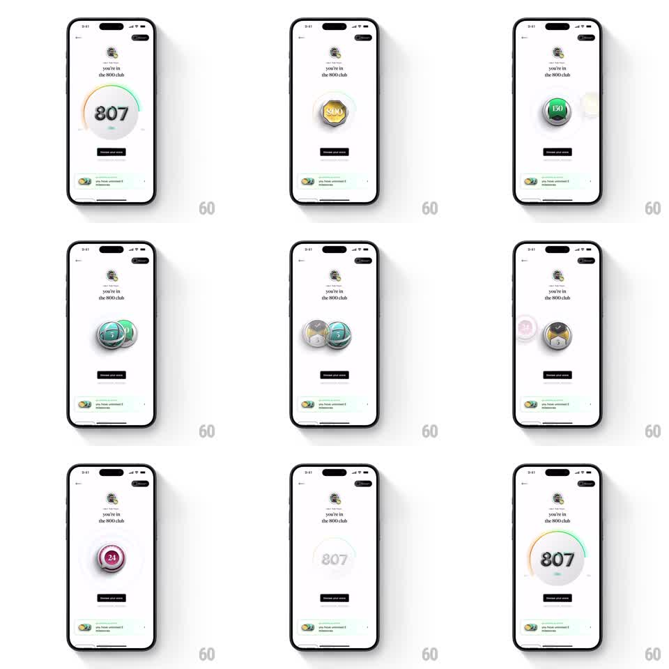

Media
Frame-by-frame

Rebuild this animation 1:1: CRED's "you're in the 800 club" screen - a colorful credit score gauge reads 807, then collected 3D milestone badges (gold 800 coin, green 150, teal 5, marble-textured, pink 24) morph and scale into each other at center stage before the gauge redraws, over a "reveal your story" button.

Rebuild this animation 1:1: CRED's "you're in the 800 club" screen - a colorful credit score gauge reads 807, then collected 3D milestone badges (gold 800 coin, green 150, teal 5, marble-textured, pink 24) morph and scale into each other at center stage before the gauge redraws, over a "reveal your story" button.
## Integration
Integration: stack-agnostic spec - springs given as stiffness/damping, timed motions as duration + curve; map every value to your framework and animation library of choice.
## Scene
White screen: small avatar and "you're in the 800 club" header, a black "reveal your story" button, and a pale banner at the bottom ("you have unlocked 2 milestones"). Center stage alternates between a semicircular score gauge (green-yellow-red arc, big "807") and 3D coin badges - a gold "800" coin, a green "150" coin, a teal "5" coin, a gray marble coin, a pink "24" coin - some shown as overlapping pairs.
## Motion spec
Pattern: cycling 3D badge morph with gauge redraw.
- The gauge arc draws on (stroke animation 700ms ease-out) and the "807" counts up (digit roll, synced).
- The gauge scales down and fades (250ms) as the first coin flips in (rotateY -90 -> 0, spring ~300/16) with a metallic gleam sweep.
- Each coin holds 700ms, then morphs into the next: current coin spins and shrinks (rotateY 90deg, scale 0.7, 250ms ease-in) while the next spins in from the other side (250ms spring).
- Paired coins slide together and overlap slightly (translate from both sides, spring ~280/18) with a soft clink scale bounce (1 -> 1.05 -> 1).
- The sequence loops back to the gauge, which redraws with the same arc animation.
- The milestone banner lifts subtly (translateY -4pt) each time a new coin lands.
## Calibration
- Coins are 3D with thickness and reeded edges - the flip must show the edge.
- Transitions are morph-like: no hard cuts between coins.
## Reduced motion
Each state fades in (250ms) in sequence; the gauge appears fully drawn.
## Don't miss
- Coin materials differ: brushed gold, glossy green, marble gray - keep them distinct.
- The "807" numeral is oversized and dark; the gauge arc is thin and multicolored.